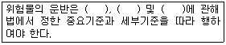
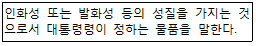

위험물기능사 (2011-04-17 기출문제)
1과목: 화재 예방과 소화방법
1. 다음 중 산화반응이 일어날 가능성이 가장 큰 화합물은?
- 아르곤
- 질소
- 일산화탄소
- 이산화탄소
(정답률: 52%)

2. 가연성 액체의 연소형태를 옳게 설명한 것은?
- 연소범위의 하한보다 낮은 범위에서라도 점화원이 있으면 연소한다.
- 가연성 증기의 농도가 높으면 높을수록 연소가 쉽다.
- 가연성 액체의 증발연소는 액면에서 발생하는 증기가 공기와 혼합하여 타기 시작한다.
- 증발성이 낮은 액체일수록 연소가 쉽고, 연소속도는 빠르다.
(정답률: 44%)
3. 화재 발생 시 물을 이용한 소화를 하면 오히려 위험성이 증대되는 것은?
- 황린
- 적린
- 탄화알루미늄
- 니트로셀룰로오스
(정답률: 79%)
4. 제5류 위험물의 화재에 적응성이 없는 소화설비는?
- 옥외소화전설비
- 스프링클러설비
- 물분무소화설비
- 할로겐화합물소화설비
(정답률: 70%)
5. 금속칼륨에 화재가 발생했을 때 사용할 수 없는 소화약제는?
- 이산화탄소
- 건조사
- 팽창질석
- 팽창진주암
(정답률: 82%)
6. 제5류 위험물의 화재의 예방과 진압 대책으로 옳지 않은 것은?
- 서로 1m 이상의 간격을 두고 유별로 정리한 경우라도 제3류 위험물과는 동일한 옥내저장소에 저장할 수 없다.
- 위험물제조소의 주의사항 게시판에는 주의사항으로 “화기엄금”만 표기하면 된다.
- 이산화탄소소화기와 할로겐화합물소화기는 모두 적응성이 없다.
- 운반용기의 외부에는 주의사항으로 “화기엄금”만 표시하면 된다.
(정답률: 51%)
7. 다음 중 가연물이 될 수 없는 것은?
- 질소
- 나트륨
- 니트로셀룰로오스
- 나프탈렌
(정답률: 67%)
8. 일반 건축물 화재에서 내장재로 사용한 폴리스틸렌 폼(polystyrene foam)이 화재 중 연소를 했다면 이 플라스틱의 연소형태는?
- 증발연소
- 자기연소
- 분해연소
- 표면연소
(정답률: 65%)
9. 분진폭발 시 소화방법에 대한 설명으로 틀린 것은?
- 금속분에 대하여는 물을 사용하지 말아야 한다.
- 분진폭발 시 직사주수에 의하여 순간적으로 소화하여야 한다.
- 분진폭발은 보통 단 한번으로 끝나지 않을 수 있으므로 제2차, 3차의 폭발에 대비하여야 한다.
- 이산화탄소와 할로겐화합물의 소화약제는 금속분에 대하여 적절하지 않다.
(정답률: 70%)
10. 20℃ 의 물 100kg이 100℃수증기로 증발하면 최대 몇 kcal의 열량을 흡수 할 수 있는가?
- 540
- 7800
- 62000
- 108000
(정답률: 58%)
11. 식용유 화재 시 제1종 분말소화약제를 이용하여 화재의 제어가 가능하다. 이때의 소화원리에 가장 가까운 것은?
- 촉매효과에 의한 질식소화
- 비누화 반응에 의한 질식소화
- 요오드화에 의한 냉각소화
- 가수분해 반응에 의한 냉각소화
(정답률: 72%)
12. 위험물제조소등의 전기설비에 적응성이 있는 소화설비는?
- 봉상수소화기
- 포소화설비
- 옥외소화전설비
- 물분무소화설비
(정답률: 47%)
13. 소화기속에 압축되어 있는 이산화탄소 1.1kg을 표준상태에서 분사하였다. 이산화탄소의 부피는 몇 ㎥가 되는가?
- 0.56
- 5.6
- 11.2
- 24.6
(정답률: 44%)
14. 유류화재에 해당하는 표시 색상은?
- 백색
- 황색
- 청색
- 흑색
(정답률: 88%)
15. 위험물관리법령의 소화설비의 적응성에서 소화설비의 종류가 아닌 것은?
- 물분무소화설비
- 방화설비
- 옥내소화전설비
- 물통
(정답률: 67%)
16. NH4H2PO4이 열분해하여 생성되는 물질 중 암모니아와 수증기의 부피 비율은?
- 1 : 1
- 1 : 2
- 2 : 1
- 3 : 2
(정답률: 63%)
17. 폭굉 유도거리 (DID)가 짧아지는 조건이 아닌 것은?
- 관경이 클수록 짧아진다.
- 압력이 높을수록 짧아진다.
- 점화원의 에너지가 클수록 짧아진다.
- 관속에 이물질이 있을 경우 짧아진다.
(정답률: 49%)
18. 과산화나트륨의 화재 시 물을 사용한 소화가 위험한 이유는?
- 수소와 열을 발생하므로
- 산소와 열을 발생하므로
- 수소를 발생하고 열을 흡수하므로
- 산소를 발생하고 열을 흡수하므로
(정답률: 71%)
19. 탄산수소나트륨과 황산알루미늄의 소화약제가 반응을 하여 생성되는 이산화탄소를 이용하여 화재를 진압하는 소화약제는?
- 단백포
- 수성막포
- 화학포
- 내알코올
(정답률: 55%)
20. 옥외탱크저장소의 방유제 내에 화재가 발생한 경우의 소화활동으로 적당하지 않은 것은?
- 탱크화재로 번지는 것을 방지하는데 중점을 둔다.
- 포에 의하여 덮어진 부분은 포의 막이 파괴되지 않도록 한다.
- 방유제가 큰 경우에는 방유제 내의 화재를 제압한 후 탱크화재의 방어에 임한다.
- 포를 방사할 때에는 방유제에서 부터 가운데 쪽으로 포를 흘러 보내듯이 방사하는 것이 원칙이다.
(정답률: 58%)
2과목: 위험물의 화학적 성질 및 취급
21. 연소 시 아황산가스를 발생하는 것은?
- 황
- 적린
- 황린
- 인화칼슘
(정답률: 55%)
22. 제2류 위험물의 취급상 주의사항에 대한 설명으로 옳지 않은 것은?
- 적린은 공기 중에서 방치하면 자연발화 한다.
- 유황은 정전기가 발생하지 않도록 주의해야 한다.
- 마그네슘의 화재 시 물, 이산화탄소소화약제 등은 사용 할 수 없다
- 삼황화린은 100℃ 이상 가열하면 발화할 위험이 있다.
(정답률: 54%)
23. 가솔린의 연소범위에 가장 가까운 것은?
- 1.4~7.6%
- 2.0~23.0%
- 1.8~36.5%
- 1.0~50.0%
(정답률: 79%)
24. 과망간산칼륨에 대한 설명으로 옳은 것은?
- 물에 잘 녹는 흑자색의 결정이다.
- 에탄올, 아세톤에 녹지 않는다.
- 물에 녹았을 때는 진한 노란색을 띤다.
- 강 알칼리와 반응하여 수소를 방출하며 폭발한다.
(정답률: 42%)
25. 위험물 안전관리법의 규정상 운반차량에 혼재해서 적재할 수 없는 것은? (단, 지정수량의 10배인 경우이다.)
- 염소화규소화합물 - 특수인화물
- 고형알코올 - 니트로화합물
- 염소산 염류 - 질산
- 질산구아니딘 - 황린
(정답률: 52%)
26. 위험물안전관리법에서 정한 위험물의 운반에 관한 다음 내용 중 ( )안에 들어갈 용어가 아닌 것은?

- 용기
- 적재방법
- 운반방법
- 검사방법
(정답률: 71%)
27. 경유에 관한 설명으로 옳은 것은?
- 증기비중은 1 이하이다.
- 제3석유류에 속한다.
- 착화온도는 가솔린보다 낮다.
- 무색의 액체로서 원유 증류 시 가장 먼저 유출되는 유분이다.
(정답률: 50%)
28. 위험물 안전관리법에서 정의한 다음 용어는 무엇인가?

- 위험물.
- 인화성물질
- 자연발화성물질
- 가연물
(정답률: 84%)
29. 물분무소화설비의 설치기준으로 적합하지 않은 것은?
- 고압의 전기설비가 있는 장소에는 당해 전기설비와 분무헤드 및 배관과 사이에 전기절연을 위하여 필요한 공간을 보유한다.
- 스트레이너 및 일제개방밸브는 제어밸브의 하류측 부근에 스터레이너, 일제개방밸브의 순으로 설치한다.
- 물분무소화설비에 2 이상의 방사구역을 두는 경우에는 화재를 유효하게 소화할 수 있도록 인접하는 방사구역이 상호 중복되도록 한다.
- 수원의 수위가 수평회전식 펌프보다. 낮은 위치에 있는 가압송수장치의 물올림장치의 물올림장치는 타설비와 겸용하여 설치한다.
(정답률: 57%)
30. 고정 지붕 구조를 가진 높이 15m의 원통종형 옥외저장탱크안의 탱크 상부로부터 아래로 1m지점에 포 방출구가 설치되어 있다. 이 조건의 탱크를 신설하는 경우 최대 허가량은 얼마인가? (단, 탱크의 단면적은 100㎡이고, 탱크 내부에는 별다른 구조물이 없으며, 공간용적 기준은 만족하는 것으로 가정한다.)
- 1400㎥
- 1370㎥
- 1350㎥
- 1300㎥
(정답률: 54%)
31. 지정수량 10배의 벤조일퍼옥사이드 운송 시 혼재할 수 있는 위험물류로 옳은 것은?
- 제1류
- 제2류
- 제3류
- 제6류
(정답률: 69%)
32. 종별 분말소화약제의 주성분이 잘못 연결된 것은?
- 제1종 분말 - 탄산수소나트륨
- 제2종 분말 - 탄산수소칼륨
- 제3종 분말 - 제1인산암모늄
- 제4종 분말 - 탄산수소나트륨과 요소의 반응생성물
(정답률: 63%)
33. 이동탱크저장소의 위험물 운송에 있어서 운송책임자의 감독, 지원을 받아 운송하여야 하는 위험물의 종류에 해당 하는 것은?
- 칼륨
- 알킬알루미늄
- 질산에스테르류
- 아염소산염류
(정답률: 77%)
34. 오황화린이 물과 반응하였을 때 생성된 가스를 연소시키면 발생하는 독성이 있는 가스는?
- 이산화질소
- 포스핀
- 염화수소
- 이산화황
(정답률: 65%)
35. 제2류 위험물에 속하지 않는 것은?
- 구리분
- 알루미늄분
- 크롬분
- 몰리브덴분
(정답률: 38%)
36. 소화난이도등급 Ⅰ의 옥내탱크저장소(인화점 70℃ 이상의 제4류 위험물만을 저장, 취급하는 것)에 설치하여야 하는 소화설비가 아닌 것은?
- 고정식 포소화설비
- 이동식 외의 할로겐화합물소화설비
- 스프링클러설비
- 물분무소화설비
(정답률: 40%)
37. 위험물 "과염소산, 과산화수소, 질산" 중 비중이 물보다 큰 것은 모두 몇 개인가?
- 0
- 1
- 2
- 3
(정답률: 69%)
38. 알루미늄분의 위험성에 대한 설명 중 틀린 것은?
- 뜨거운 물과 접촉 시 결렬하게 반응한다.
- 산화제와 혼합하면 가열, 충격 등으로 발화할 수 있다.
- 연소 시 수산화알루미늄과 수소를 발생한다.
- 염산과 반응하여 수소를 발생한다.
(정답률: 52%)
39. 적린과 혼합하여 반응하였을 때 오산화인을 발생하는 것은?
- 물
- 황린
- 에틸알코올
- 염소산칼륨
(정답률: 33%)
40. 지정수량이 나머지 셋과 다른 것은?
- 과염소산칼륨
- 과산화나트륨
- 유황
- 금속칼슘
(정답률: 65%)
41. 위험물안전관리법령에서 규정하고 있는 옥내소화전설비의 설치기준에 관한 내용 중 옳은 것은?
- 제조소등 건축물의 층마다 당해 층마다 당해 층의 각 부분에서 하나의 호스접속구까지의 수평거리가 25m 이하가 되도록 설치한다.
- 수원의 수량은 옥내소화전이 가장 많이 설치된 층의 옥내소화전 설치개수(설치개수가 5개 이상인 경우는 5개)에 18.6m3를 곱한 양 이상이 되도록 설치한다.
- 옥내소화전설비는 각 층을 기준으로 하여 당해 층의 모든 옥내소화전(설치개수가 5개 이상인 경우는 5개의 옥내소화전)을 동시에 사용할 경우에 각 노즐선단의 방수압력이 170kPa 이상의 성능이 되도록 한다.
- 옥내소화전설비는 각 층을 기준으로 하여 당해 층의 모든 옥내소화전(설치개수가 5개 이상인 경우는 5개의 옥내소화전)을 동시에 사용할 경우에 각 노즐선단의 방수량이 1분당 130L 이상의 성능이 되도록 한다.
(정답률: 51%)
42. 위험물안전관리법령의 위험물 운반에 관한 기준에서 고체위험물은 운반용기 내용적의 몇 % 이하의 수납율로 수납하여야 하는가?
- 80
- 85
- 90
- 95
(정답률: 69%)
43. 제5류 위험물인 트리니트로톨루엔 분해 시 주 생성물에 해당하지 않는 것은?
- CO
- N2
- NH3
- H2
(정답률: 45%)
44. 히드라진의 지정수량은 얼마인가?
- 200kg
- 200L
- 2000kg
- 2000L
(정답률: 47%)
45. 탄화칼슘을 물과 반응시키면 무슨 가스가 발생하는가?
- 에탄
- 에틸렌
- 메탄
- 아세틸렌
(정답률: 67%)
46. 위험물안전관리법령에서 정의하는 “특수인화물”에 대한 설명으로 올바른 것은?
- 1기압에서 발화점이 150℃ 이상인 것
- 1기압에서 인화점이 40℃미만인 고체물질인 것
- 1기압에서 인화점이 -20℃ 이하이고, 비점 40℃ 이하 인 것
- 1기압에서 인화점이 21℃ 이상, 70℃ 미만인 가연성 물질인 것
(정답률: 70%)
47. 물과 반응하여 발열하면서 위험성이 증가하는 것은?
- 과산화칼륨
- 과망간산나트륨
- 요오드산칼륨
- 과염소산칼륨
(정답률: 62%)
48. 제6류 위험물 성질로 알맞은 것은?
- 금수성물질
- 산화성액체
- 산화성고체
- 자연발화성물질
(정답률: 75%)
49. 물과 친화력이 있는 수용성 용매의 화재에 보통의 포소화약제를 사용하면 포가 파괴되기 때문에 소화 효과를 잃게 된다. 이와 같은 단점을 보완한 소화약제로 가연성인 수용성용매의 화재에 유효한 효과를 가지고 있는 것은?
- 알코올포소화약제
- 단백포소화약제
- 합성계면활성제포소화약제
- 수성막포소화약제
(정답률: 49%)
50. 위험물 제조소에서 연소 우려가 있는 외벽은 기산점이 되는 선으로부터 3m (2층 이상의 층에 대해서는 5m)이내에 있는 외벽을 말하는데 이 기산점이 되는 선에 해당하지 않은 것은?
- 동일 부지내의 다른 건축물과 제조소 부지 간의 중심선
- 제조소등에 인접한 도로의 중심선
- 제조소등이 설치된 부지의 경계선
- 제조소등의 외벽과 동일 부지내의 다른 건축물의 외벽간의 중심선
(정답률: 47%)
51. 제1류 위험물이 아닌 경우?
- 과요오드산염류
- 퍼옥소붕산염류
- 요오드의 산화물
- 금속의 아지화합물
(정답률: 66%)
52. 제조소등에 있어서 위험물의 저장하는 기준으로 잘못된 것은?
- 황린은 제3류 위험물이므로 물기가 없는 건조한 장소에 저장하여야 한다.
- 덩어리상태의 유황과 화약류에 해당하는 위험물은 위험물용기에 수납하지 않고 저장할 수 있다.
- 옥내저장소에서는 용기에 수납하여 저장하는 위험물의 온도가 55℃를 넘지 아니하도록 필요한 조치를 강구하여야 한다.
- 이동저장탱크에는 저장 또는 취급하는 위험물의 유별, 품명, 최대수량 및 적재중량을 표시하고 잘 보일 수 있도록 관리하여야 한다.
(정답률: 63%)
53. 마그네슘분의 일반적인 성질에 대한 설명 중 틀린 것은?
- 은백색의 광택이 있는 금속분말이다.
- 더운물과 반응하여 산소를 발생한다.
- 열전도율 및 전기전도도가 큰 금속이다.
- 황산과 반응하여 수소가스를 발생한다.
(정답률: 64%)
54. 톨루엔의 위험성에 대한 설명으로 틀린 것은?
- 증기비중은 약 0.87이므로 높은 곳에 체류하기 쉽다.
- 독성이 있으나 벤젠보다는 약하다.
- 약 4℃의 인화점을 갖는다.
- 유체 마찰 등으로 정전기가 생겨 인화하기도 한다.
(정답률: 43%)
55. 경유 2000L, 글리세린 2000L를 같은 장소에 저장하려 한다. 지정수량의 배수의 합은 얼마인가?
- 2.5
- 3.0
- 3.5
- 4.0
(정답률: 45%)
56. 제3류 위험물이 아닌 것은?
- 마그네슘
- 나트륨
- 칼륨
- 칼슘
(정답률: 63%)
57. 적재 시 일광의 직사를 피하기 위하여 차광성 있는 피복으로 가려야 하는 위험물은?
- 아세트알데히드
- 아세톤
- 메틸알코올
- 아세트산
(정답률: 50%)
58. 분진 폭발의 위험이 가장 낮은 것은?
- 아연분
- 시멘트
- 밀가루
- 커피
(정답률: 74%)
59. 물과 반응하여 수소를 발생하는 물질로 불꽃 반응 시 노란색을 나타내는 것은?
- 칼륨.
- 과산화칼륨
- 과산화나트륨
- 나트륨
(정답률: 71%)
60. 다음 중 삼황화인이 가장 잘 녹는 물질은?
- 차가운 물
- 이황화탄소
- 염산
- 황산
(정답률: 50%)